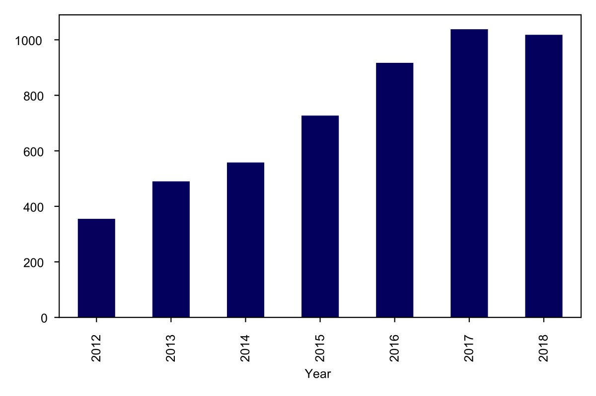
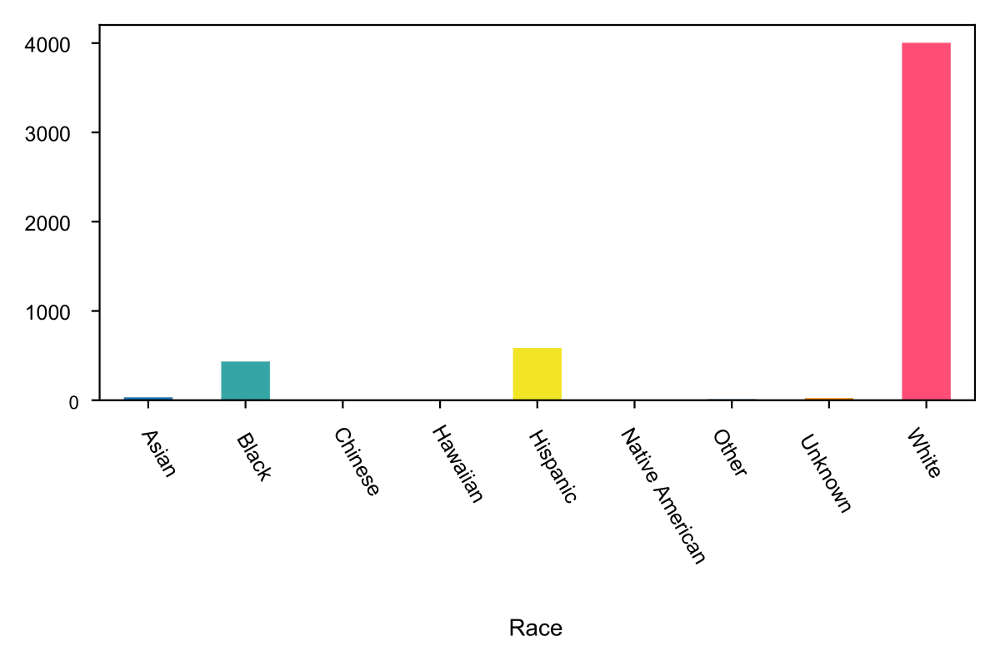

According to the preliminary data we can observe a small drop of the amount of deaths in Connecticut in 2018. Given the figures, we can easily presume that the opioid crisis may be starting to level off in the state. The news are great, but we should be cautious. Vox states that this is not the first time that it’s appeared the opioid epidemic has leveled off. Between 2011 and 2012 overdose deaths have decreased. But in the following years dangerous synthetic opioids seeped into the black market and as a result overdose deaths increased to 70.000 in 2017.
In 2018, there were 1018 overdose deaths involving opioids in Connecticut. The State of Connecticut has released a dataset involving accidental deaths associated with drug overdose from 2012 to 2018.
The Opioid Crisis or Opioid Epidemic has started back in the late 1990s. Pharmaceutical companies convinced medical community that they can prescribe opioid drugs to patients, by reassuring them that the patients would not become addicted. But opioid drugs are addicted. According to the National Institute on Drug Abuse, “opioids are a class of drugs that include the illegal drug heroin. Synthetic opioids such as fentanyl, and pain relievers are available legally by prescription, such as oxycodone (OxyContin), hydrocodone (Vicodin), codeine, morphine, and many others. However, health providers started to prescribe them in bigger rates. But no one could have imagined the impact of this “silent contract”. All these have lead to high rates of misuse, addiction and deaths. In 2017 HHS declared a public health emergency.
The State of Connecticut has released a dataset involving accidental deaths associated with drug overdose from 2012 to 2018. The dataset is derived from an investigation by the Office of the Chief Medical Examiner, and includes the toxicity report, death certificate, as well as a scene investigation. More specific, in 2018, there were 1018 overdose deaths involving opioids in Connecticut compared to 1038 in 2017. According to the New York Times total drug overdose deaths in America declined by around 5 percent last year, the first drop since 1990.
Deaths caused by opioid drugs from 2012-2018 in CT

Sources: DataGov
White Opioid Immortality in CT
Another interesting figure to look at, is the deaths per race.
- White: 78%
- Hispanic: 11%
- Black: 0.09%
- Asian: 0.006%
- Unknown: 0.005%
- Other: 0.002%
- Chinese: 0.0003%
- Hawaiian: 0.0002%
- Native American: 0.0002%
Deaths per race from 2012-2018

Sources: DataGov
According to “Trends in Black and White Opioid Mortality in the United States, 1979-2015”, written by Alexander, Monica J.a; Kiang, Mathew V.b; Barbieri, Magalic in the academic magazine “Epidemiology” black and all white residents in the US went through three successive waves. From 1979 to mid-1990s the epidemic affected both populations and was driven by heroin. From the mid-1990s to 2010, the increase in opioid mortality by natural/semi-synthetic opioids among Whites, while there was no increase among Blacks. From 2010 to 2015 increases in opioids mortality for both populations have been driven by heroin and synthetic opioids (e.g. fentanyl and its analogues). This brings up the question of why the White death rate is higher? Is it because the White people have better access to medical care?
To be continued...